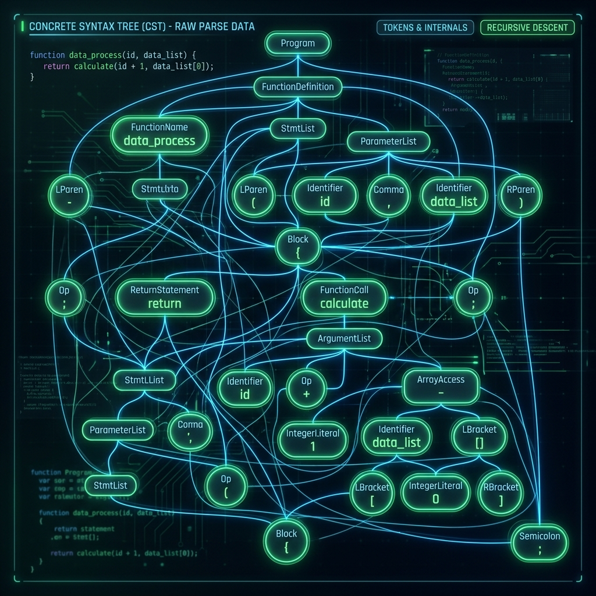
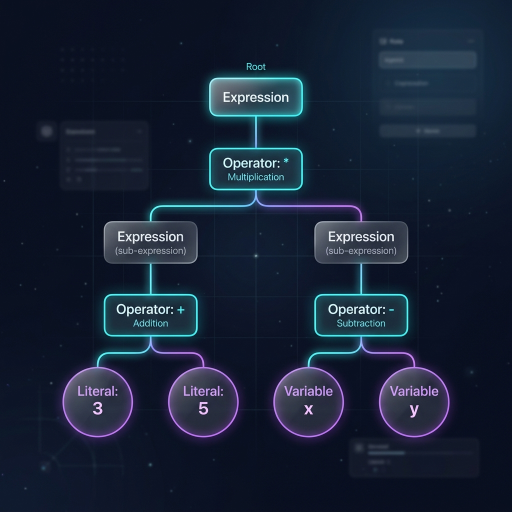

LauraSeFue
Teoría, Parser y Árbol Sintáctico (AST)
De los fundamentos formales al código en producción

1. Teoría: Compiladores vs Intérpretes
Antes de sumergirnos, ubiquémonos en el ecosistema de los lenguajes:
- Compilador (AOT): Traduce TODO el código fuente a código máquina o binario de una vez antes de la ejecución (Ej: C, Go, Rust).
- Intérprete: Procesa y ejecuta el código en tiempo real, instrucción por instrucción.
LauraSeFue está diseñado como un Tree-Walking Interpreter. Esto significa que nuestra ejecución ocurre directamente recorriendo una estructura en memoria (el árbol) en tiempo real.
2. Orígenes Históricos de la Sintaxis
La capacidad de leer código no surgió de la nada. Tiene fuertes bases matemáticas:
- 1956 - Noam Chomsky: Define la Jerarquía de Chomsky. Los lenguajes de programación pertenecen al Tipo 2: Gramáticas Libres de Contexto (CFG).
- 1959 - John Backus y Peter Naur: Crean la notación BNF (Backus-Naur Form) para describir rigurosamente la sintaxis de ALGOL 60.
Sin una gramática formal matemática, sería imposible enseñarle a una computadora a validar la sintaxis de forma determinista.

3. ¿Por qué necesitamos un Parser?
Imagina que tienes este código: x = 2 + 3 * 4
El código fuente y la lista de tokens entregada por el Lexer son lineales (unidimensionales). No poseen noción de anidamiento, prioridad ni reglas matemáticas.
El Parser (Analizador Sintáctico) es el componente que se encarga de convertir esa secuencia plana en una representación topológica y estructurada (2D / 3D). Él le dice a la máquina que el * tiene precedencia sobre el +.
4. Parse Tree (CST) vs AST
El CST guarda el formato exacto del texto. El AST lo "abstrae", manteniendo solo la jerarquía lógica.
Parse Tree (CST)

Abstract Syntax Tree (AST)

¿Por qué Parser + AST son CRÍTICOS?
En el desarrollo de compiladores, el Parser y el AST son el corazón del sistema. ¿Qué pasaría si intentáramos omitirlos?
- ➔ Estructura Matemática
- ➔ Ejecución Limpia
- ➔ Capacidad de Optimización
- ➔ Escalabilidad del Lenguaje
Exploremos cada uno de estos puntos en detalle a continuación.
1. Sin Parser ➔ ❌ No hay estructura
El problema: Los tokens son una lista plana unidimensional. El compilador no sabe dónde empieza una expresión y dónde termina.
Al construir el AST, pasamos de una representación 1D a una topología en árbol 2D/3D.
Esto permite que la máquina entienda que 2 + 3 * 4 no se evalúa de izquierda a derecha secuencialmente. El AST aísla el 3 * 4 en una rama más profunda, obligando a resolver la multiplicación primero y garantizando el respeto a las leyes matemáticas.
2. Sin AST ➔ ❌ No hay ejecución limpia
El problema: Ejecutar código leyendo los tokens al vuelo requiere un intérprete lleno de condicionales (Ifs), y constantes saltos o "backtracking".
Con un AST, nuestro Evaluador simplemente hace un recorrido ("Tree-Walking"), delegando el comportamiento a cada clase de nodo. Un nodo IfExpression en el árbol sabe exactamente cuáles son sus ramas (consecuencia y alternativa), evitando tener que buscar llaves o palabras clave (else) en tiempo de ejecución.
3. Sin AST ➔ ❌ No hay optimización
El problema: Aplicar algoritmos de optimización sobre cadenas de texto es ineficiente y muy propenso a errores catastróficos.
El AST permite transformaciones lógicas directas. Por ejemplo, podemos buscar nodos BinaryExpression donde ambos lados sean constantes (ej: 5 + 3) y reemplazarlos por un único IntegerLiteral(8). Esto se llama Constant Folding, y hace que el código se ejecute más rápido sin requerir esfuerzo en tiempo de ejecución.
4. Sin AST ➔ ❌ No hay escalabilidad
El problema: A medida que agregas features complejos (clases, cierres/closures, tipado fuerte), procesar linealmente se vuelve insostenible.
El AST desacopla la lectura (Lexer/Parser) de la lógica de evaluación (Evaluador). Puedes modificar la gramática (Front-end) sin reescribir las reglas de ejecución (Back-end), siempre y cuando ambos componentes se comuniquen a través de la misma estructura de árbol acordada.
5. El Flujo de Vida en LauraSeFue
Para llegar al evaluador, hacemos un puente perfecto:
- Lexer (Escáner): Código fuente ➔ Tokens (Lectura plana).
- Parser: Tokens ➔ AST (Entendiendo la gramática).
- Evaluador: AST ➔ Ejecución / Resultado (Recorrido de ejecución).

6. El AST en nuestro código
En el archivo ast.py, el AST es una representación jerárquica de clases en Python.
Por ejemplo, let x = 5; no es solo un string, es un nodo LetStatement vivo:
Program
└── LetStatement
├── name: Identifier("x")
└── value: IntegerLiteral(5)7. Jerarquía Base (ast.py)
Todo hereda de Node, y se divide en dos mundos conceptuales:
class Node(ABC):
def token_literal(self) -> str: pass
def __str__(self) -> str: pass
class Statement(Node):
# SENTENCIAS: Hacen acciones, no retornan un valor usable.
# Ej: let x = 5, return x, while, for
class Expression(Node):
# EXPRESIONES: Producen un valor cuantificable.
# Ej: 5 + 3, miFuncion(), x == y8. La Evolución de los Algoritmos de Parseo
Históricamente, los científicos informáticos desarrollaron herramientas (Parser Generators) como YACC, Bison y ANTLR que emplean algoritmos formales LL(k) (Top-Down) o LR(k) (Bottom-up).
El problema: Escribir un parser "Recursivo Descendente" puro a mano para manejar las reglas de precedencia matemática es agotador y repetitivo. Exige crear docenas de funciones anidadas (ej: parseTerm, parseFactor, parsePower).
9. 1973: El Genio de Vaughan Pratt
Vaughan Pratt revolucionó la escritura de Parsers creando el Top-Down Operator Precedence (hoy llamado Pratt Parsing).
¿Su brillante insight? En vez de anidar funciones gramaticales abstractas, asignamos propiedades de precedencia y funciones de parseo directamente asociadas a los Tipos de Tokens.
Esto permite un parser diminuto, limpio y completamente extensible.

10. Precedencias: ¿Quién Manda?
En el corazón matemático de parser.py, existe un IntEnum llamado Precedences.
class Precedences(IntEnum):
LOWEST = 1
OR = 2
AND = 3
EQUALS = 4 # == , !=
LESSGREATER = 5 # > , < , >= , <=
SUM = 6 # + , -
PRODUCT = 7 # * , / , %
PREFIX = 8 # -X , !X
POWER = 9 # ^
CALL = 10 # myFunction(X)Determina numéricamente que * (PRODUCT=7) domina sobre + (SUM=6).
11. El Dualismo Prefix / Infix
Pratt asocia cada token a hasta dos roles sintácticos:
Prefix (Prefijo):Qué hace si aparece sin nada a su izquierda. (Ej:-5,!true,(, identificador).Infix (Infijo):Qué hace si aparece en medio de dos operandos. (Ej: 5+3, fun(args)).
12. Mapeando Tokens a Funciones
En el inicializador del Parser, los diccionarios de registro unen la teoría con Python:
self._prefix_parse_fns: Dict[TokenType, PrefixParseFn] = {
TokenType.IDENTIFIER: self._parse_identifier,
TokenType.INTEGER: self._parse_integer_literal,
TokenType.MINUS: self._parse_prefix_expression,
TokenType.LPAREN: self._parse_grouped_expression,
}
self._infix_parse_fns: Dict[TokenType, InfixParseFn] = {
TokenType.PLUS: self._parse_infix_expression,
TokenType.MULTIPLY: self._parse_infix_expression,
TokenType.LPAREN: self._parse_call_expression,
}12.1. Anatomía de una Función Prefix
¿Qué ocurre dentro de una función Prefix? Veamos el caso más simple: un identificador (x).
Simplemente toma el token actual, crea el nodo AST y lo devuelve. No interactúa con otros tokens porque no es un operador.
def _parse_identifier(self) -> Identifier:
# Retorna un nodo AST 'Identifier'
# usando el _current_token que le cedió el bucle principal
return Identifier(
token=self._current_token,
value=self._current_token.literal
)Otro caso: números enteros (5).
Aquí la función debe, además, intentar convertir el literal de texto a un entero (Int), manejando posibles errores del programador.
def _parse_integer_literal(self) -> Expression | None:
literal = IntegerLiteral(token=self._current_token)
try:
literal.value = int(self._current_token.literal)
except ValueError:
self._errors.append(f"No se pudo convertir a entero")
return None
return literal13. Bucle Principal: parse_program
Todo el análisis arranca en parse_program().
Recorre tokens llamando a _parse_statement() hasta encontrar el fin del archivo (EOF).
Esto representa el nodo raíz del árbol: un nodo Program lleno de listas de sentencias.

14. Despacho Recursivo: _parse_statement
Determina qué sub-árbol armar basado en el _current_token.
def _parse_statement(self):
match self._current_token.token_type:
case TokenType.LET:
return self._parse_let_statement()
case TokenType.RETURN:
return self._parse_return_statement()
case TokenType.WHILE:
return self._parse_while_statement()
case _:
return self._parse_expression_statement()14.1. Análisis de Código: let
Analicemos cómo el parser procesa let x = 5;
- Instancia el nodo
LetStatementusando el token actual (let). _expected_token: Exige que siga unIDENTIFIER. Si es correcto, avanza y extrae su valor ("x").- Exige que siga un token
ASSIGN(=). - Delega el resto a
_parse_expressionpara capturar el valor ("5").
def _parse_let_statement(self) -> LetStatement | None:
# 1. Creamos el nodo statement con el token 'let'
statement = LetStatement(token=self._current_token)
# 2. Validamos identificador y lo guardamos
if not self._expected_token(TokenType.IDENTIFIER):
return None
statement.name = Identifier(token=self._current_token, \
value=self._current_token.literal)
# 3. Validamos el signo igual
if not self._expected_token(TokenType.ASSIGN):
return None
# 4. Avanzamos y parseamos el valor a la derecha
self._advance_tokens()
statement.value = self._parse_expression(Precedences.LOWEST)
# Limpieza final (consumimos ';' si existe)
if self._peek_token_is(TokenType.SEMICOLON):
self._advance_tokens()
return statement14.2. Análisis de Código: return
Para return valor; la lógica es similar pero más condensada:
- Se crea
ReturnStatementcon el tokenreturn. - No hay variable ni
=, así que avanzamos directamente al valor a retornar. - Capturamos toda la expresión con
_parse_expression(LOWEST).
Esta estructura predecible es típica del Recursive Descent Parsing en sentencias.
def _parse_return_statement(self) -> ReturnStatement:
# 1. Instanciamos el nodo y avanzamos
statement = ReturnStatement(token=self._current_token)
self._advance_tokens()
# 2. Parseamos lo que siga al 'return'
statement.return_value = self._parse_expression(Precedences.LOWEST)
# 3. Consumimos el ';' opcional
if self._peek_token_is(TokenType.SEMICOLON):
self._advance_tokens()
return statement15. El Corazón del Algoritmo: _parse_expression
La culminación de la teoría de Pratt Parsing ocurre aquí:
def _parse_expression(self, precedence):
# 1. Obtener función PREFIX para el token inicial
prefix_fn = self._prefix_parse_fns[self._current_token.token_type]
left_expression = prefix_fn()
# 2. La magia: Mientras el siguiente operador tenga MAYOR precedencia
while precedence < self._peek_precedence():
infix_fn = self._infix_parse_fns[self._peek_token.token_type]
self._advance_tokens()
# 3. La expresión actual (left) es engullida por el nuevo operador
left_expression = infix_fn(left_expression)
return left_expression16. Ejemplo de Gravedad: 5 + 3 * 2
1. _parse_expression(LOWEST) comienza el proceso.
2. Token '5' ➔ prefix_fn retorna IntegerLiteral(5).
3. El token peek es '+'. Su precedencia es SUM (6), mayor que LOWEST (1).
4. infix_fn para '+' captura el '5' como lado izquierdo.
17. Ejemplo de Gravedad: 5 + 3 * 2
Dentro de la función infix del '+':
1. Llama recursivamente a _parse_expression(SUM) para buscar el lado derecho.
2. Lee '3'. Retorna un AST IntegerLiteral(3).
3. PERO el token peek ahora es '*'. Su precedencia es PRODUCT (7). ¡PRODUCT(7) > SUM(6)!
4. El bucle obliga a que el '*' devore el '3' primero, asociando la multiplicación antes que la suma y forjando un AST perfecto.
18. Agrupación y Paréntesis
¿Qué pasa con (5 + 3) * 2?
En el AST, no existe un nodo "Paréntesis". Cuando el token es LPAREN '(', se ejecuta una función prefix que altera la precedencia forzosamente:
def _parse_grouped_expression(self):
self._advance_tokens() # Consume '('
# Resetea la precedencia al mínimo. Evalúa todo el interior "aislado".
expression = self._parse_expression(Precedences.LOWEST)
self._expected_token(TokenType.RPAREN) # Consume el ')'
return expression19. Expresiones Avanzadas: Funciones
Definición: _parse_function_literal crea funciones anónimas (closures), empaquetando lista de parámetros y bloque de cuerpo en un nodo.
Llamada: El paréntesis de apertura LPAREN '(' también tiene un rol INFIX. Si sigue a un identificador, invoca _parse_call_expression para recolectar argumentos separados por comas.

20. Robustez, no Explosiones
Un buen Parser, desde los tiempos de ALGOL, no explota al primer error.
Si encuentra un token inesperado, usa un mecanismo de "recovery" ligero con self._expected_token(tipo).
En vez de levantar una excepción fatal, agrega un mensaje semántico a la lista self._errors y devuelve None. Esto te permite mostrar todos los errores sintácticos de una sola vez al programador.
21. Trabajo Futuro: Construyendo el Evaluador
El AST es solo la partitura musical. El Evaluador es la orquesta.
- Objetos: Representaciones dinámicas de ejecución (Integer, String, Function Object).
- La Función Eval: Método de Tree-Walking que visita nodos usando pattern matching (`match-case`).
- Environment (Entorno): Tabla hash (diccionario) que asocia strings de variables (Identificadores) con objetos evaluados en memoria.
- Lexical Scoping: Al instanciar una función, debemos guardar una referencia al Environment actual para lograr soportar recursión y Closures.
El Paradigma Completo
Del marco teórico de Chomsky y Pratt al código Python moderno de LauraSeFue.
Siguiente Gran Desafío: Dar vida lógica al árbol a través del Tree-Walking Evaluator.